第 1 轮：星璃「真名契约仪式」设计稿视觉与交互评审
《万界真典》整体视觉基调（暗夜星案、赤金精装书、书侧星璃、底部极轻字幕条）是否符合预期？
推荐 A 认可当前基调：书页占 70% 视觉中心，从第 0 幕邀请到第 5 幕结契与典藏态风格连贯，可直接进入素材补齐或细节轮。
第 0 幕 · 扉页初亮（邀请确认）
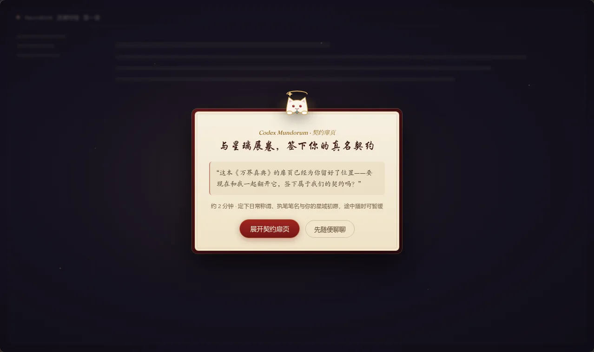
第 1 幕 · 封面合拢《万界真典》
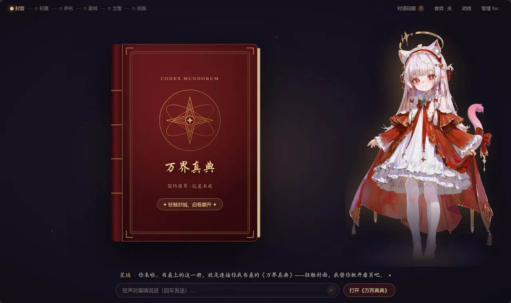
第 1 幕 · 启卷《初逢 · 忆星书庭》
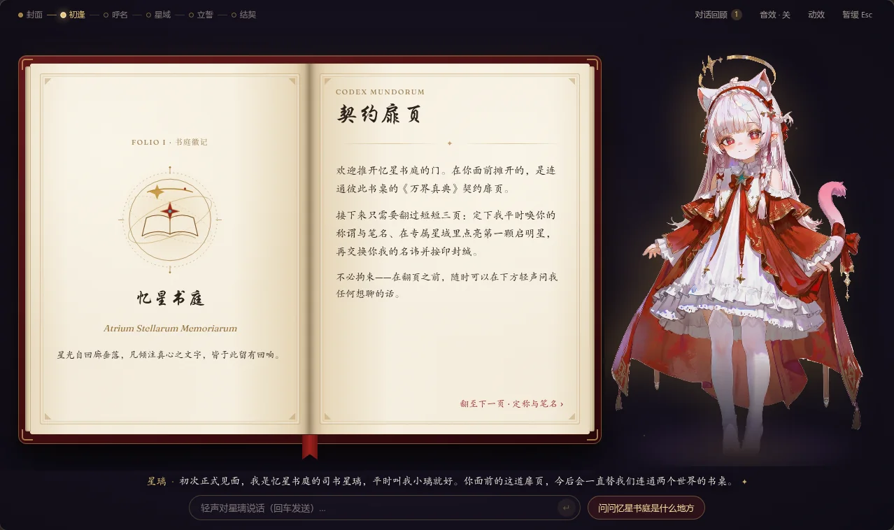
第 2 幕 · 呼名与笔名（星璃共创拟名笺）
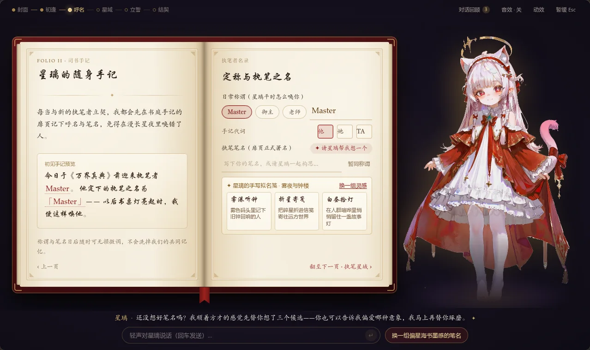
第 3 幕 · 执笔者的星域与启明星
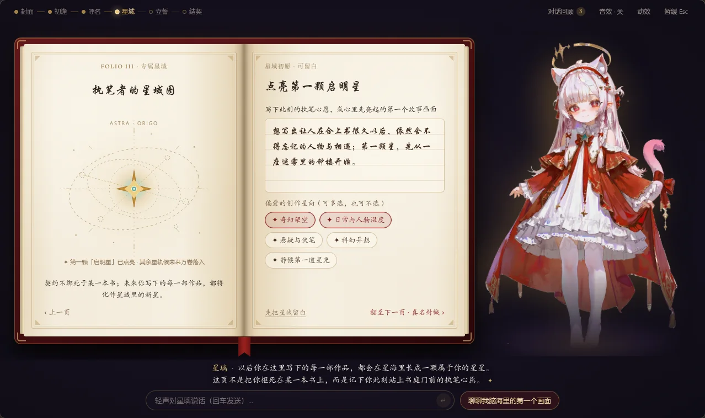
第 4 幕 · 真名立誓与亲笔封缄
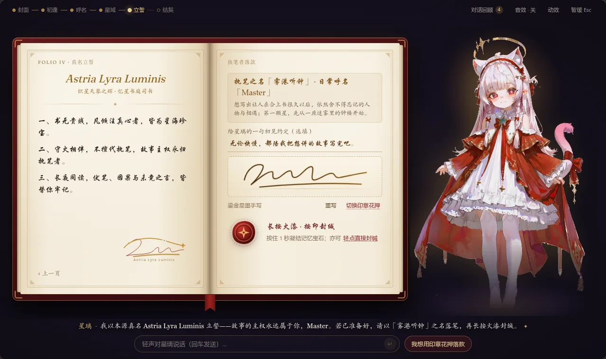
第 5 幕 · 记忆宝石嵌页 · 结契回响
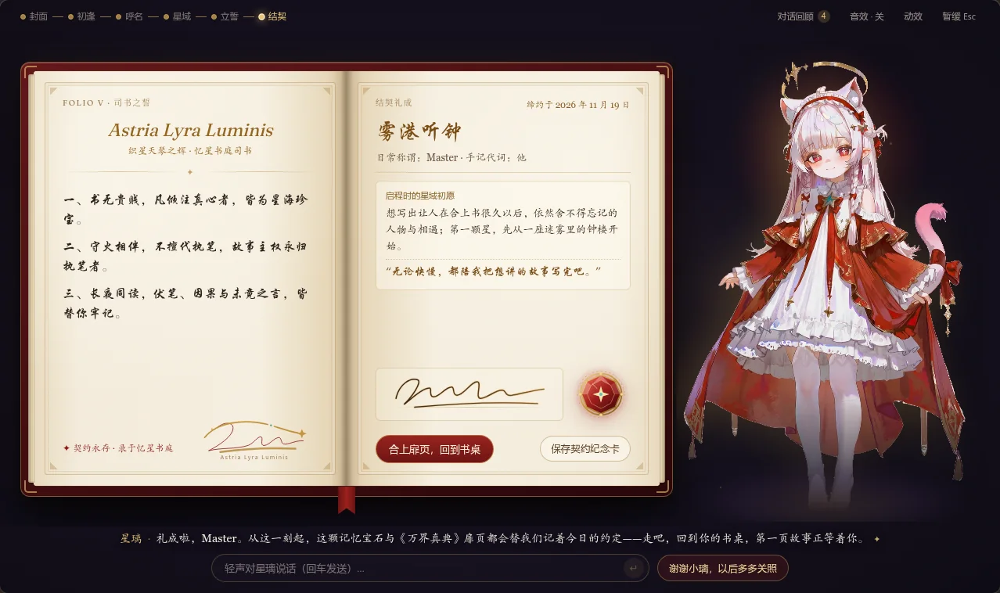
二次打开 · 典藏契约书
A 认可当前基调
保留暗夜星案 + 赤金羊皮纸双页 + 底部轻字幕结构，继续补齐立绘差分与细部打磨。
B 调亮书庭背景明暗
书页构图不变，但希望外围星夜底景更柔和明亮或增加书案景深层次。
C 重做书页材质或排版
对古籍边框、羊皮纸色调、手写字体风格或信息密度有不同偏好（在备注写明方向）。
书侧星璃的构图比例：定制 7 张半身差分，还是沿用全身立绘？
推荐 A 定制 7 张半身差分：拉近至胸腰近景后表情切换更直观，与设计稿 7 种情绪差分一致。
第 4 幕落款区默认呈现手写星墨签名板，还是朱砂藏书印花押？
推荐 A 默认手写签名板：亲笔签字更有缔约仪式感，鼠标或键盘用户一键即可切到朱砂印章花押。
V1 上线范围：仅开放星璃自主持，还是同步开放 V2「真典司仪」宣礼条？
推荐 A V1 仅星璃自主持：顶栏更简洁且不依赖 w00043 的 host 发出者，组件层已保留 V2 司仪接口。
认可 960×700 / 390×844 响应式单页切换与右侧「对话回顾」抽屉布局？
推荐同意：宽屏抽屉落在星璃侧不遮挡双页，中屏与 390px 窄屏切单页标签后全场景 0px 溢出、0 裁切。
1280×760 · 对话回顾抽屉
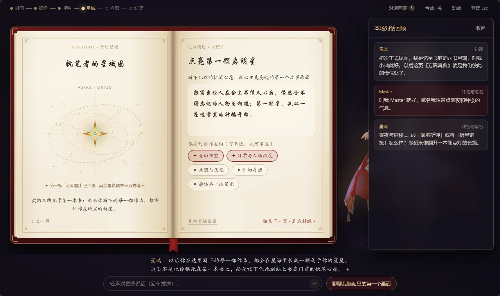
960×700 · 第 2 幕拟名笺展开
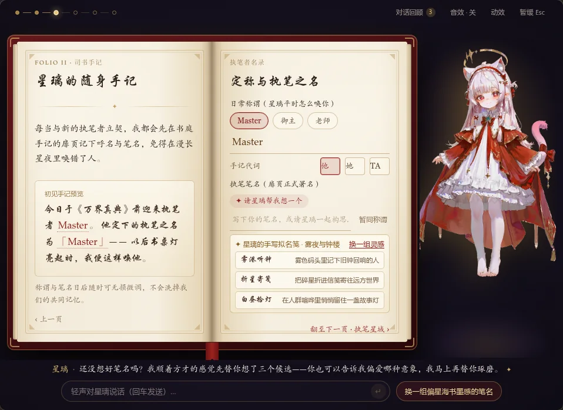
960×700 · 第 4 幕立誓与封缄
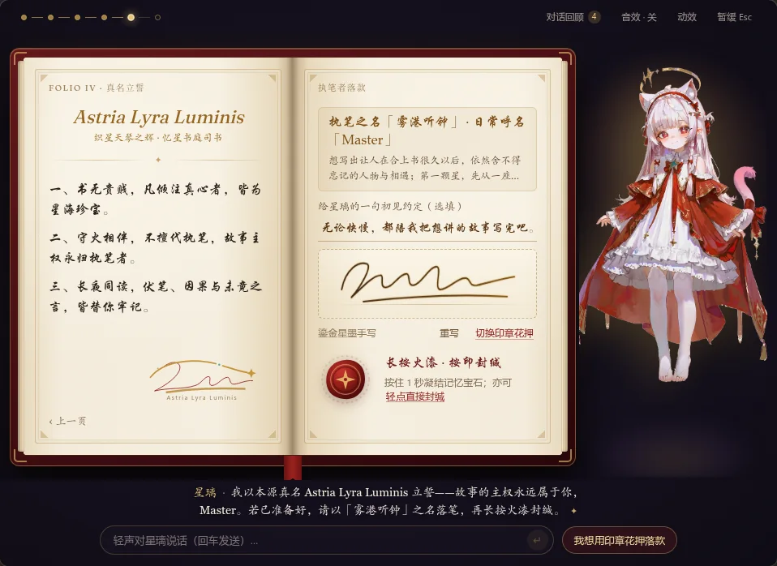
390×844 · 第 2 幕单页切换
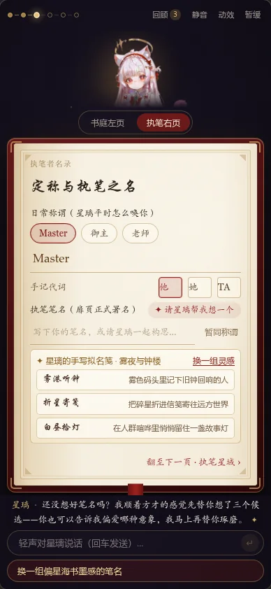
390×844 · 第 4 幕签名封缄
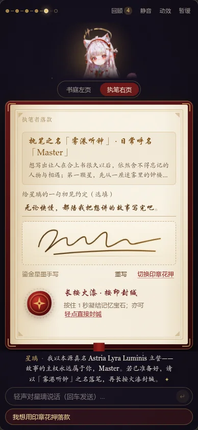
390×844 · 对话回顾全宽抽屉
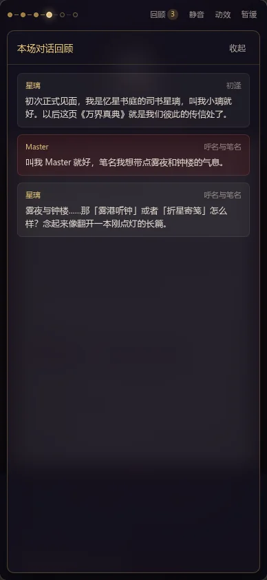
本轮缺失的素材与平台能力（后续补齐，不用答）
| 类别 | 缺失项 | 当前草稿占位做法 | 正式落地依赖 |
|---|---|---|---|
| 美术素材 | 星璃 7 张专属半身立绘差分（welcome / curious / listening / inspired / solemn / sealed / gentle） |
抠底后的既有母版全身立绘 lyra-master-cutout.webp，辅以柔和呼吸光环 |
按本轮 lyra-framing 决定另行生图或制作表情差分 |
| 字体素材 | 随包离线分发的中英文手写体 WebFont | 本机楷体与手写体回退栈（LXGW WenKai / STKaiti / Kaiti SC） |
引入开源可商用字体（如霞鹜文楷）子集化打包进插件资源 |
| 音效素材 | 真实 Foley 纸页、羽笔、风铃与水晶声景音频 | Web Audio API 实时程序合成 7 组克制音效，默认可控静音 | 可沿用零体积合成音，或按需替换为高保真短音频文件 |
| 纹理素材 | 《万界真典》高精封面压纹与羊皮纸物理贴图 | SVG/CSS 程序化纸纹、装帧线与天文星轨线描 | 若追求油画/皮革级实体质感再补静态纹理贴图 |
| 平台底座 | nbook.bots、bot://memory/ 持久化空间与常驻 Bot 主对话 |
草稿内纯内存态 + ceremony-script.ts 剧本驱动 |
依赖 w00043（t06 主对话 / t09 Bot 记忆）落地 |
| 中间人协议 | 底栏消息转主对话、流式字幕与隐身 ceremony.* 舞台工具（agent.evalObjects） |
前端本地回执模拟星璃对话与书页星墨落字 | 正式仪式插件接入主对话事件流与 ToolContext.ask() 首次确认 |
| 落盘与分流 | 原子写 contract.json、contract-signature.svg、master.md 及同步 Profile 称呼 |
内存状态切换 + 前端 Canvas 导出纪念卡 PNG | 后端落盘并按 signedAt 区分首次仪式与二次典藏态 |
| 入口挂载 | 全屏 workbench.overlays 挂载、UI 按钮入口与 $skill 附属仪式说明 |
Component Lab 草稿夹具 ContractCeremonyWindowFixture.vue |
正式立项独立仪式插件后注册宿主入口与技能文件 |
已定（2026-11-18 设计定稿）
- 以《万界真典》展开双页古籍为视觉主角，右侧星璃陪伴，底部极轻字幕条与单行输入框。
- 全书手写体 + 多处错峰并行星墨魔法浮现；第一版不做 TTS，星璃台词同步星墨流式浮现。
- 仪式插件作为实时对话中间人，结束仪式后保留完整对话上下文，当轮直接改口且下次 compaction 刷新常驻配置。
- 第 2 幕支持自定义称谓、手记代词、执笔笔名及请星璃共创拟名笺；第 3 幕采用不绑单书的「执笔者的星域与启明星」。
- 第 4 幕亲笔手写签名板与朱砂印章花押并行，长按 1 秒火漆封缄并保留无障碍轻点/回车完成；第 5 幕凝结记忆宝石并可导出纪念卡 PNG。
- 二次打开按
contract.json分流进入典藏契约书，支持无损微调称谓、重温演出与导出纪念卡。